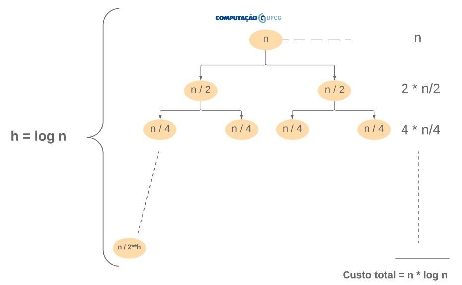
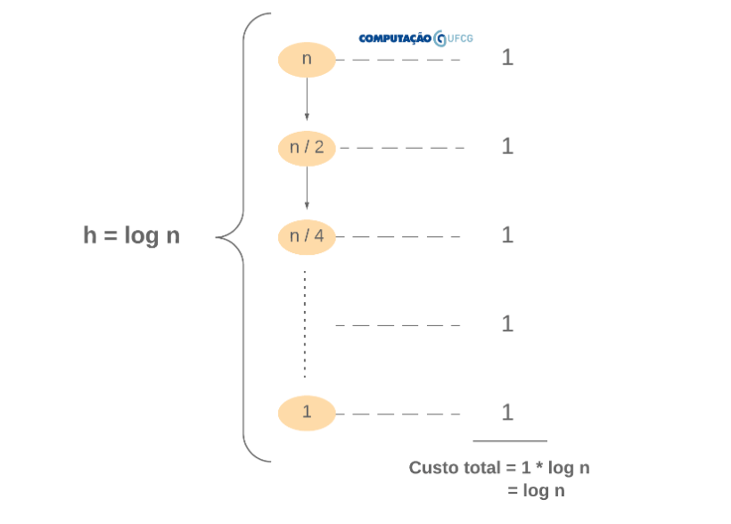

Análise de Algoritmos Recursivos
Até aqui vimos como analisar algoritmos iterativos, lembra? Esse processo pode ser resumido pelos seguintes passos:
- identificar operações primitivas;
- identificar a quantidade de vezes que cada uma dessas primitivas é executada;
- Somar essas execuções.
Você lembra quais são as operações primitivas?
- Avaliação de expressões booleanas;
- Operações matemáticas;
- Retorno de métodos;
- Atribuição;
- Acesso à variáveis e posições arbitrárias de um array
Seguindo esses passos sempre chegamos a uma função que descreve o tempo de execução do algoritmo. Vimos também que estamos interessados na ordem de crescimento dessa função, mais do que nos seus termos detalhados. Isto é, como se comporta a função para grandes valores de $n$. Assim, podemos aplicar as seguintes diretrizes para identificar a classe de complexidade das funções:
- Eliminar constantes;
- Eliminar expoentes de menor magnitude.
Desse modo, a função $f(n) = 70n + 32n + 231$ tem ordem de crescimento linear. Isto é, $f(n) \in \Theta(n)$. Lembrando sempre que a maneira formal de demonstrar que $f(n) \in \Theta(n)$ é encontrar $c1$, $c2$ e $n0$, tal que:
$0 <= c1*n <= 70n + 32n + 231 <= c2*n, \forall n >=n0 $
O Problema
Acontece que, para algoritmos recursivos, a aplicação dos passos acima não é direta, pois um algoritmo recursivo é definido em termos dele mesmo. Vamos começar com uma função bem simples: fatorial.
public int fatorial(int n) {
if (n==0 || n == 1)
return 1;
else
return n * fatorial(n-1);
}
Vamos tentar aplicar os passos que aprendemos para a análise de algoritmos.
Identificando as primitivas.
if (n==0 || n == 1) -> avaliação de expressão booleana.
return 1 -> retorno de método.
return n -> retorno de método.
* -> operação aritmética.
fatorial(n-1) -> ?
Como vimos, para o caso em que as execuções não são em função de $n$ (caso acima) podemos simplificar as operações primitivas e suas execuções para (1).
O problema aqui é calcular o custo de fatorial(n-1).
Qual o custo dessa operação e quantas vezes ela será executada? Não conseguimos responder essa questão de maneira direta como fizemos para os algoritmos iterativos porque trata-se de uma função definida em termos dela mesma. No nosso contexto, funções dessa natureza são chamadas de relações de recorrência.
Relação de Recorrência
Relação de recorrência é uma equação ou inequação que descreve uma função em termos dela mesma considerando entradas menores.
A função que descreve o tempo de execução de um algoritmo recursivo é dada por sua relação de recorrência. Vejamos a relação de recorrência que descreve o algoritmo de cálculo do fatorial:
$T(n) = T(n-1) + \Theta(1)$,
simplificando temos: $T(n) = T(n-1) + 1$
Ou seja, o custo de calcular fatorial(n) é o custo de calcular fatorial(n-1) somado às primitivas que são executadas a cada passo da recursão que, nesse caso, representam 1.
Nosso desafio então é resolver essa relação de recorrência para determinarmos o tempo de execução do algoritmo para cálculo do fatorial. Para isso, vamos utilizar o método da árvore de recursão.
Método da árvore de recursão
A ideia para resolver uma relação de recorrência é simular a sua execução através de uma árvore, onde os nós representam a entrada e as arestas representam a chamada recursiva.
Exemplo: Fatorial
Vamos entender como funciona esse recurso através de exemplos. Veja a árvore de recursão para o cálculo do fatorial de 5.

Note que a raiz da árvore inicia com o valor 5, que é o tamanho da entrada. Note também que o custo do nível da entrada 5 é 1 (as primitivas). Este custo deve ser somado ao custo para a entrada 4 (chamada recursiva) que, por sua vez é 1. O cálculo da entrada 4 deve ser somado ao custo para a entrada 3 (chamada recursiva) e assim por diante. Veja que isso nada mais é do que a reprodução da relação de recorrência $T(n) = T(n-1) + 1$.
Por fim, não é difícil compreender que o custo total é a soma dos custos de cada nível, ou seja, a soma dos custos de cada passo da recursão.
Contudo, nosso trabalho aqui é definir o tempo de execução do algoritmo em função de uma entrada de tamanho n qualquer. Vamos, novamente, ilustrar a árvore de recursão para esse cenário:

Novamente, para calcular a função que define o tempo de execução desse algoritmo, precisamos somar os custos de cada nível. Isto é, somaremos o valor 1 uma quantidade de vezes representada por $h + 1$, onde $h$ é a altura da árvore e o +1 é o custo da última execução (if n == 0 || n == 1).
Portanto, precisamos definir $h$. Analisando a árvore, não é difícil notar que $h = n - 1$. Assim, temos que $f(n) = 1 * (n-1) + 1$, isto é, $f(n) = n$. Portanto, podemos dizer que $f(n) \in \Theta(n)$.
Veja em detalhes como isso é feito no vídeo abaixo.
Em resumo, podemos estabelecer os seguintes passos para analisar um algoritmo recursivo:
- Estabelecer a relação de recorrência
- Expandir a árvore de execução baseado na relação de recorrência
- Determinar a altura h máxima da árvore
- Somar o custo de cada nível de execução
- Somar o custo total (soma do custo de todos os níveis)
Exemplo: MergeSort
Vamos analisar um exemplo um pouco mais complexo. O Merge Sort é um algoritmo de ordenação que, a cada execução parcial, efetua duas chamadas recursivas diminuindo pela metade o tamanho da entrada e um rotina (merge) cujo tempo de execução é dado por $\Theta(n)$.
public void mergeSort(int[] v, int ini, int fim) {
If (ini < fim) {
int meio = (ini + fim) / 2;
mergeSort(v, ini, meio);
mergeSort(v, meio + 1, fim);
merge(v, ini, meio, fim);
}
}
Relação de recorrência. A primeira etapa para identificar a classe de complexidade do Merge Sort é identificar a sua relação de recorrência:
$T(n) = T(n/2) + T(n/2) + (n)$, simplificando
$T(n) = 2 * T(n/2) + n$, onde n = v.length
-
$2 * T(n/2)$ representa as duas chamadas recursivas em que a entrada é divida pela metade em cada uma delas.
-
$+ n$ representa o custo da função que une duas sequências já ordenadas em uma sequência ordenada. Não precisamos saber como isso é feito nesse momento, apenas precisamos saber que essa parte do algoritmo tem custo linear.
Gravei um vídeo para deixar mais claro. Talvez te ajude a entender como, a partir do algoritmo, extraímos a relação de recorrência do Merge Sort.
Para fixar! Muitas relações de recorrência podem ser descritas na seguinte forma: T(n) = a * T(n/b) + f(n), com a >= 1, b > 1 e f(n) não negativa. É importante que a gente saiba em português o que significa essa equação acima. Você lembra que ela é referente a um algoritmo recursivo, certo? Em português, dizemos que há a chamadas recursivas e que cada chamada recursiva divide a entrada em b partes. Além disso, a cada chamada recursiva, um custo f(n) é adicionado.
Precisa de mais um exemplo sobre como extrair a relação de recorrência a partir de um algoritmo recursivo? Veja o vídeo abaixo para fixar bem.
Acho que agora é um bom momento para você testar o que aprendeu até aqui.
Árvore de Recursão. Voltando para o Merge Sort, vamos ilustrar a árvore de recursão gerada pela recorrência $T(n) = 2 T(n/2) + n$.

Podemos notar que a árvore é um pouco diferente da que ilustramos para o fatorial. Em primeiro lugar, a árvore é binária. Sendo assim, o custo de um nível agora é calculado somando-se os custos de cada nó desse nível. Novamente, as arestas representam as duas chamadas recursivas de cada passo. Outra mudança é que cada nó filho diminui na metade o tamanho da entrada do nó pai. Essas duas últimas sentenças são resumidas por $2 * T (n/2)$. Por fim, cada nó tem o seu tempo de execução definido em função linear do tamanho da entrada. Essa última sentença é resumida pela parte final da relação de recorrência …. $+n$.
Função do tempo de execução. Agora precisamos somar os custos de todos os níveis. Para isso, assim como no caso do fatorial, precisamos determinar a altura dessa árvore.
Para o cálculo da altura podemos notar que a árvore irá parar de crescer quando $n / 2^h = 1$, pois o algoritmo atinge a condição de parada ini >= fim.
Assim, temos que $2^h = n$. Aplicando $\log$ nos dois lados da equação, temos:
$h * \log_{2}2 = \log n$
Simplificando, temos: $h = \log_{2}n$
Agora que já definimos a altura da árvore, precisamos somar os custos parciais (de cada nível) uma quantidade de vezes representada pela altura da árvore. Cada nível tem custo $n$ (ex: $2 * n/2$, $4 * n/4$, $8 * n/8$…). Se somarmos $n$ por 10 vezes, teremos $10 * n$. Se somarmos $n$ por 100 vezes, teremos $100*n$. Como vamos somar $n$ por $\log n$ vezes, temos que o tempo de execução desse algoritmo é dado por $f(n) = n * \log n$. Naturalmente, só podemos fazer essa multiplicação porque cada nível tem o mesmo custo n.
Então, temos que $T(n) =(n * \log n)$.
O vídeo abaixo explica detalhadamente como é feita a análise de eficiência do Merge Sort utilizando a árvore de recursão.
Exemplo: Busca Binária
O algoritmo de busca binária é um algoritmo clássico de identificação da posição de um determinado elemento em uma sequência ordenada. A ideia é “palpitar” sempre a posição central. Caso o palpite seja maior do que o valor sendo procurado, o algoritmo descarta a metade à frente do palpite e passa a procurar na metade que contém os valores menores do que o palpite. Dessa maneira, a cada passo da recursão, são descartados metade dos elementos restantes. Esse procedimento torna a busca binária muito eficiente, quando comparada com a busca linear, que descarta apenas um elemento a cada iteração.
public int indexOf(int[] v, int n, int ini, int fim) {
if (ini < fim) {
int meio = (ini + fim) / 2;
if (v[meio] == n) return meio;
if (n < v[meio])
return indexOf(v, n, ini, meio - 1);
else
return indexOf(v, n, meio + 1, fim);
} else {
return -1;
}
}
Relação de recorrência. Como aprendemos anteriormente, a primeira etapa para identificar o custo de execução do algoritimo de Busca Binária é identificar a sua relação de recorrência:
$T(n) = T(n/2) + \Theta(1)$.
Simplificando, $T(n) = T(n/2) + 1$, onde n = v.length
-
$T(n/2)$ representa a chamada recursiva em que a entrada é divida pela metade. Importante notar aqui que, embora haja duas chamadas recursivas no código, apenas uma é executada a cada passo. Por isso temos $T(n/2)$ e não $2 * T(n/2)$.
-
$+ 1$ representa o custo da operação de cálculo do meio e da avaliação das expressões booleanas.
Caso você não tenha entendido como chegamos a essa relação de recorrência, eu gravei um vídeo explicando. Veja abaixo.
Árvore de Recursão. Vamos ilustrar a árvore de recursão gerada pela recorrência $T(n) = T(n/2) + 1$.

Cada nó da árvore possui apenas uma aresta, porque há apenas uma chamada recursiva. Cada nível tem o seu custo constante (1), uma vez que a cada passo da recursão apenas algumas primitivas são executadas, como as avaliações das expressões booleanas e o cálculo da variável meio.
Função do tempo de execução. Agora precisamos somar os custos de todos os níveis. Para isso, assim como nos casos anteriores, precisamos determinar a altura dessa árvore.
O cálculo da altura é exatamente o mesmo do realizado para o exemplo do Merge Sort. A árvore irá parar de crescer quando $n / 2^h = 1$, pois o algoritmo atinge a condição de parada ini >= fim. Aplicando os mesmos passos do exemplo anterior, temos que a $h = \log n$
Agora que já definimos a altura da árvore, precisamos somar os custos parciais (de cada nível) uma quantidade de vezes representada pela altura da árvore. Cada nível tem custo 1. Se somarmos 1 por 10 vezes, teremos $10 * 1$. Se somarmos 1 por 100 vezes, teremos $100*1$. Como vamos somar 1 por $\log n$ vezes, temos que o tempo de execução desse algoritmo é dado por $f(n) = 1 * \log n$, ou seja, $f(n) = \log n$. Naturalmente, só podemos fazer essa multiplicação porque cada nível tem o mesmo custo 1.
Eu fiz um vídeo que segue esse protocolo descrito acima para ilustrar a árvore, calcular sua altura e definir o custo total. Vale a pena você conferir para fixar bem o modo como utilizamos o método da árvore de recursão.
Método Mestre
O método iterativo utilizando a árvore de recursão é, de fato, uma boa alternativa para identificar a classe de complexidade de algoritmos recursivos. Além de ser um método analítico, ele tem propriedades didáticas importantes. Isto é, o exercício de ilustrar a árvore de recursão (execução) e, a partir dela, identificar o custo total do algoritmo é importante não somente para esse fim, mas para exercitar a capacidade de abstração e raciocínio do aluno. Contudo, muitas vezes, trata-se de um mecanismo laborioso. Nesse contexto, surge o Teorema Mestre que nos permite identificar a classe de complexidade de um algoritmo aplicando apenas algumas operações matemáticas e comparando ordem de complexidade de funções.
E como o teorema funciona? Primeiramente, é preciso que a relação de recorrência tenha determinadas propriedades. Vamos analisar concretamente essas propriedades:
$T(n) = a*T(n/b) + f(n)$
Sendo $a>=1$, $b>1$ e $f(n)$ não negativa.
Como vimos anteriormente, $a$ representa a quantidade de chamadas recursivas (quantidade de subproblemas), $b$ representa em quanto a entrada é diminuída a cada chamada recursiva e $f(n)$ representa o custo parcial de cada etapa da recursão. Para aplicar o Teorema Mestre, sua relação de recorrência deve ser na forma acima com $a >= 1$, $b > 1$ e $f(n)$ não negativa.
Para esses casos, o Teorema Mestre é uma maneira direta de resolvermos a relação de recorrência. O Teorema Mestre estabelece que:
-
Se f(n) < n ** logba, então T(n) = theta(n ** logba).
-
Se f(n) = n ** logba, então T(n) = theta(f(n) * logbn).
-
Se f(n) > n ** logba, então T(n) = theta(f(n)).
Desse modo, se a relação de recorrência obedecer às restrições $a>=1$, $b>1$ e $f(n)$ não negativa, basta aplicarmos o teorema.
Exemplo
Para a relação de recorrência $T(n) = 8 * T(n/2) + 1000 * n^2$, temos:
- $a = 8$
- $b = 2$
- $f(n) = 1000 * n^2$
Comparando $1000 * n^2$ com n ** logba, temos que $1000 * n^2$ < $n^3$. Portanto, aplicando a primeira regra do Teorema Mestre, podemos afirmar que T(n) = theta(n ** logba) e, portanto, $T(n) = (n^3)$.
Exemplo
$T(n) = 2 * T(n/2) + 10*n$
Para a relação acima, temos:
- $a = 2$
- $b = 2$
- $f(n) = 10 * n$
Comparando $10 * n$ com n ** logba temos que $10 * n = n$, pois comparamos a ordem de grandeza das funções e, quando fazemos isso, as constantes não importam. Portanto, aplicando a segunda regra do Teorema Mestre, podemos afirmar que $T(n) = \Theta(n * \log_{2}n)$.
Exemplo
Para $T(n) = 2 * T(n/2) + n^2$, temos:
- $a = 2$
- $b = 2$
- $f(n) = n^2$
Comparando $n^2$ com n ** logba temos que $n^2 > n$. Portanto, aplicando a terceira regra do Teorema Mestre, podemos afirmar que $T(n) = \Theta(f(n))$ e, portanto, $T(n) = \Theta(n^2)$.
Notas
Este material é um resumo superficial do Capítulo 4 do livro “Algoritmos: Teoria e Prática” de Cormen et. al.
Há outras implementações de fatorial. Por exemplo, ao invés de checar se n == 0 ou n == 1, bastaria apenas checar se n == 0, 1 * 1 == 1. Dessa forma, a altura da árvore gerada teria uma unidade a mais. Contudo, isso não impacta na ordem de grandeza do algoritmo.